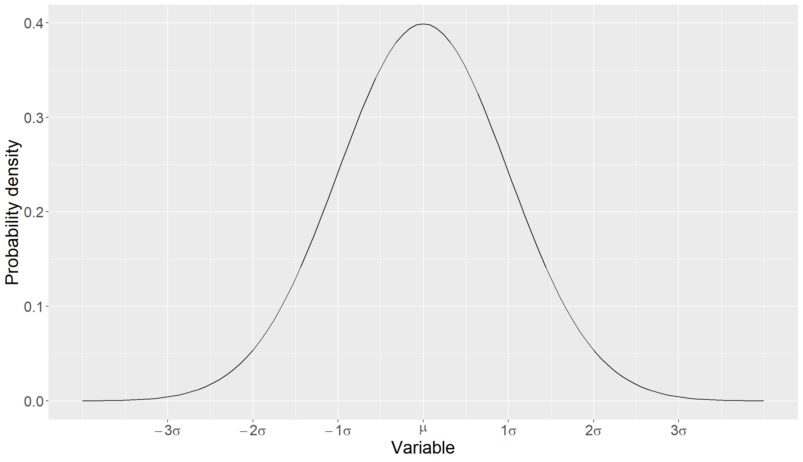
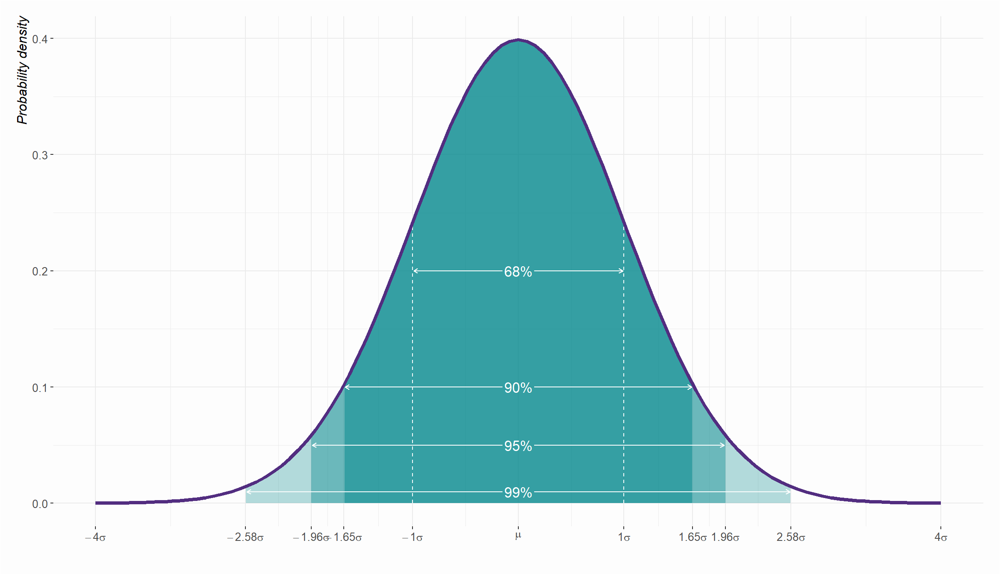
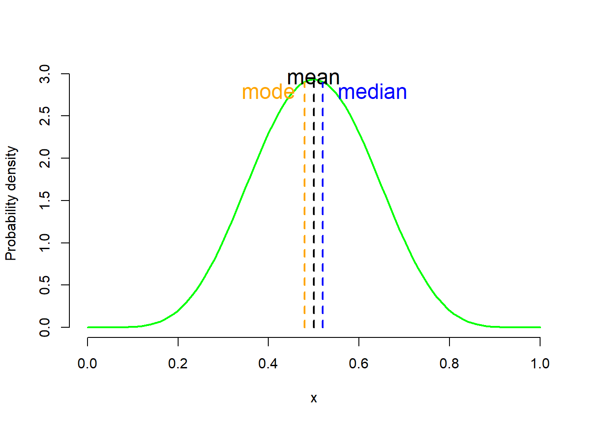
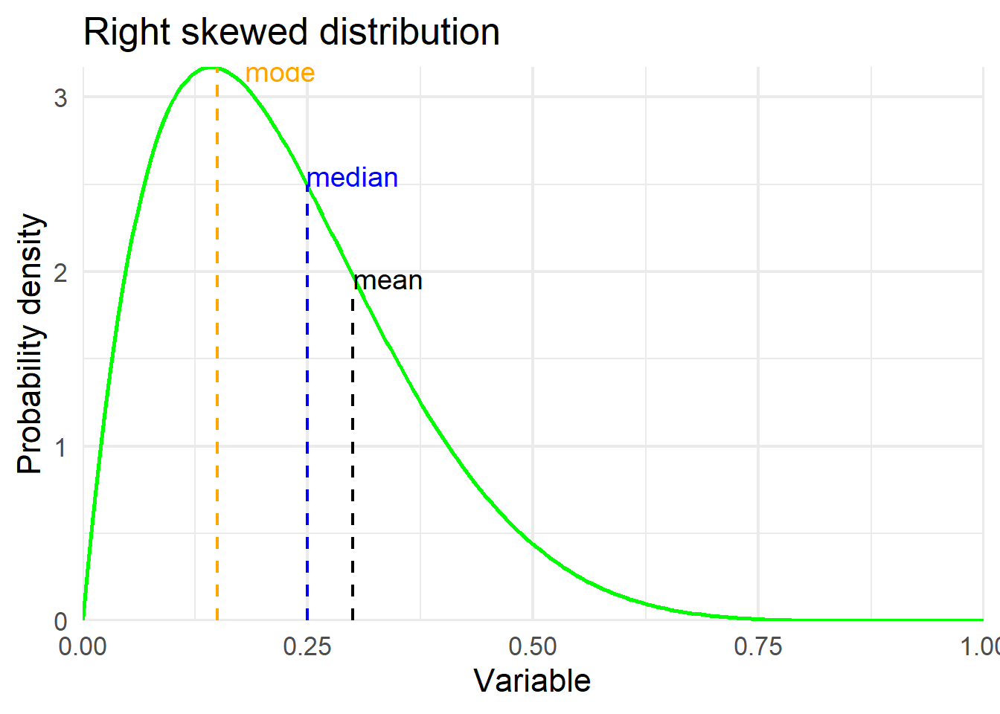
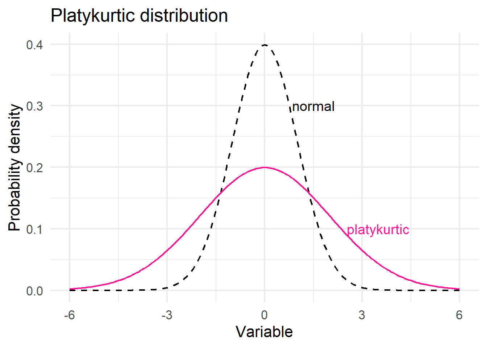
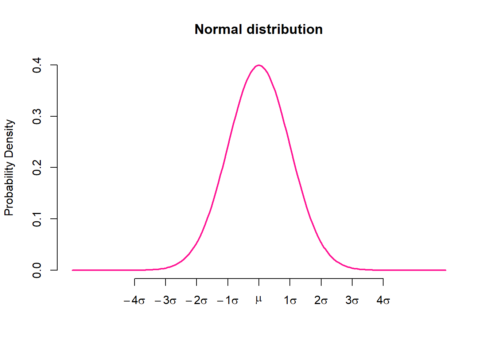
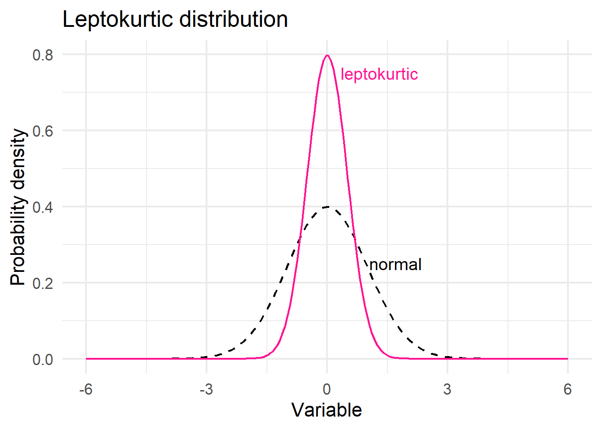

3 Normal distribution
There are several important probability distributions in statistics. However, the normal distribution might be the most important. This distribution is also referred to as “Gaussian” or “Gauss” distribution.
When we have finished this chapter, we should be able to:
3.1 Packages we need
We need to load the following packages:
3.2 The shape of a normal distribution
A normal distribution is a symmetric “bell-shaped” probability distribution where most of the observed data are clustered around a central location. Data farther from the central location occur less frequently (Figure 3.1).
Normal distribution, technically a probability density function, is a distribution defined by two parameters, mean \(\mu\) and variance \(\sigma^2\). The mean, \(\mu\), is a “location parameter”, which defines the central tendency. The variance, \(\sigma^2\), is the “scale parameter”, which defines the width and height of the distribution. It’s formally given as:
\[ f(x)={\frac {1}{\sigma {\sqrt {2\pi }}}}e^{-{\frac {1}{2}}\left({\frac {x-\mu }{\sigma }}\right)^{2}} \]
where \(\pi \approx 3.142\) and \(e \approx 2.718\).
x <- seq(-4, 4, length=200)
df <- data.frame(x)
ggplot(df, aes(x)) +
stat_function(fun = dnorm) +
scale_x_continuous(breaks = c(-3, -2, -1, 0, 1, 2, 3),
labels = expression(-3*sigma, -2*sigma, -1*sigma,
mu, 1*sigma, 2*sigma, 3*sigma)) +
labs(x = "Variable",
y = "Probability density") +
theme(text = element_text(size = 16)) 
3.3 The properties of a normal distribution
normal_dist("#522d80","#00868B") +
labs(y = "Probability density",
x = "Variable") +
scale_x_continuous(breaks = c(-3, -2.58, -1.96, -1,
0, 1, 1.96, 2.58, 3),
labels = expression(-3*sigma, -2.58*sigma, -1.96*sigma, -1*sigma,
mu, 1*sigma, 1.96*sigma, 2.58*sigma, 3*sigma)) +
theme(text = element_text(size = 20),
axis.text.x = element_text(size = 12))
The Normal distribution has the properties summarized as follows:
Bell shaped and symmetrical around the mean. Shape statistics, skewness and excess kurtosis are zero.
The peak of the curve lies above the mean.
Any position along the horizontal axis (x-axis) can be expressed as a number of standard deviations from the mean.
All three measures of central location mean, median, and mode are the same.
The empirical rule (also called the “68-95-99 rule”). Much of the area (68%) of the distribution is between -1 \(\sigma\) below the mean and +1 \(\sigma\) above the mean, the large majority (95%) between -1.96 \(\sigma\) below the mean and +1.96 \(\sigma\) above the mean (often used as a reference range), and almost all (99%) between -2.58 \(\sigma\) below the mean and +2.58 \(\sigma\) above the mean. The total area under the curve equals to 1 (or 100%), almost -3 \(\sigma\) below the mean and +3 \(\sigma\) above the mean.
3.4 Shape statistics and normality
There are two shape statistics that can indicate deviation from normality: skewness and excess kurtosis.
A. Skewness
Skewness is usually described as a measure of a distribution’s symmetry – or lack of symmetry. Skewness values that are negative indicate a tail to the left (Figure 3.3 a), zero value indicate a symmetric distribution (Figure 3.3 b), while values that are positive indicate a tail to the right (Figure 3.3 c).
The skewness for a normal distribution is zero. In practice, approximate bell-shaped curves have skewness values between −1 and +1. Values from −1 to −3 or from +1 to +3 indicate that the distribution is tending away from symmetry with >1 indicating moderate skewness and >2 indicating severe skewness. Any values below−3 or above +3 are a good indication that the distribution is not symmetric, therefore, the variable can not be normally distributed.
Show the code
# create a data frame
x <- seq(0, 1, length=200)
y1 <- dbeta(x, 7, 2)
y2 <- dbeta(x, 7, 7)
y3 <- dbeta(x, 2, 7)
df1 <- data.frame(x, y1, y2, y3)
# left skewed distribution
ggplot(df1, aes(x, y1)) +
geom_line(color="green", linewidth = 1.0) +
geom_segment(aes(x = 0.7, y = 0, xend = 0.7, yend = 1.98),
color = "black", linetype = "dashed", linewidth = 0.8) +
annotate('text', x = 0.67, y = 2.1, label = 'mean', size = 8, color = "black") +
geom_segment(aes(x = 0.78, y = 0, xend = 0.78, yend = 2.78),
color = "blue", linetype = "dashed", linewidth = 0.8) +
annotate('text', x = 0.75, y = 2.9, label = 'median', size = 8, color = "blue") +
geom_segment(aes(x = 0.86, y = 0, xend = 0.86, yend = 3.17),
color = "orange", linetype = "dashed", linewidth = 0.8) +
annotate('text', x = 0.81, y = 3.13, label = 'mode', size = 8, color = "orange") +
theme_minimal(base_size = 18) +
coord_cartesian(expand = FALSE, xlim = c(0, NA), ylim = c(0, NA)) +
labs(title = "Left skewed distribution",
x = "Variable",
y = "Probability density")
# symmetric distribution
ggplot(df1, aes(x, y2)) +
geom_line(color="green", linewidth = 1.0) +
geom_segment(aes(x = 0.49, y = 0, xend = 0.49, yend = 2.89),
color = "orange", linetype = "dashed", linewidth = 0.8) +
annotate('text', x = 0.5, y = 2.46, label = 'mode', size = 8, color = "orange") +
geom_segment(aes(x = 0.5, y = 0, xend = 0.5, yend = 2.9),
color = "black", linetype = "dashed", linewidth = 0.8) +
annotate('text', x = 0.5, y = 2.90, label = 'mean', size = 8, color = "black") +
geom_segment(aes(x = 0.51, y = 0, xend = 0.51, yend = 2.89),
color = "blue", linetype = "dashed", linewidth = 0.8) +
annotate('text', x = 0.5, y = 2.66, label = 'median', size = 8, color = "blue") +
theme_minimal(base_size = 18) +
coord_cartesian(expand = FALSE, xlim = c(0, NA), ylim = c(0, NA)) +
labs(title = "Symmetric distribution",
x = "Variable",
y = "Probability density")
# right skewed distribution
ggplot(df1, aes(x, y3)) +
geom_line(color="green", linewidth = 1.0) +
geom_segment(aes(x = 0.15, y = 0, xend = 0.15, yend = 3.17),
color = "orange", linetype = "dashed", linewidth = 0.8) +
annotate('text', x = 0.22, y = 3.10, label = 'mode', size = 8, color = "orange") +
geom_segment(aes(x = 0.25, y = 0, xend = 0.25, yend = 2.5),
color = "blue", linetype = "dashed", linewidth = 0.8) +
annotate('text', x = 0.3, y = 2.55, label = 'median', size = 8, color = "blue") +
geom_segment(aes(x = 0.3, y = 0, xend = 0.3, yend = 1.9),
color = "black", linetype = "dashed", linewidth = 0.8) +
annotate('text', x = 0.34, y = 1.96, label = 'mean', size = 8, color = "black") +
theme_minimal(base_size = 18) +
coord_cartesian(expand = FALSE, xlim = c(0, NA), ylim = c(0, NA)) +
labs(title = "Right skewed distribution",
x = "Variable",
y = "Probability density")


B. Excess kurtosis
The other way that distributions can deviate from normality is kurtosis. The excess kurtosis1 parameter is a measure of the combined weight of the tails relative to the rest of the distribution. Kurtosis is associated indirect with the peak of the distribution (if the peak of the distribution is too high/sharp or too low compared to a “normal” distribution).
1 Excess kurtosis is commonly used because for a normal distribution is equal to zero, while the kurtosis is equal to 3.
Distributions with negative excess kurtosis are called platykurtic (Figure 3.4 a). If the measure of excess kurtosis is zero the distribution is mesokurtic (Figure 3.4 b). Finally, distributions with positive excess kurtosis are called leptokurtic (Figure 3.4 c).
The excess kurtosis for a normal distribution is zero. In practice, approximate normal distributions have excess kurtosis values between −1 and +1. Values from −1 to −3 or from +1 to +3 indicate that the distribution is tending away from a mesokurtic distribution. Any values below −3 or above +3 are a good indication that the distribution is not mesokurtic, therefore, the variable can not be normally distributed.
Show the code
# create a data frame
x <- seq(-6, 6, length=200)
y1 <- dnorm(x)
y2 <- dnorm(x, sd= 2)
y3 <- dnorm(x, sd= 0.5)
df2 <- data.frame(x, y1, y2, y3)
# platykurtic distribution
ggplot(df2, aes(x, y1)) +
geom_line(color="black", linewidth = 0.8, linetype = "dashed") +
geom_line(aes(x, y2), color="deeppink", linewidth = 0.8) +
annotate('text', x = 2.0, y = 0.3, label = 'normal', size = 7, color = "black") +
annotate('text', x = 4.2, y = 0.1, label = 'platykurtic', size = 8, color = "deeppink") +
theme_minimal(base_size = 18) +
labs(title = "Platykurtic distribution",
x = "Variable",
y = "Probability density")
# mesokurtic distribution
ggplot(df2, aes(x, y1)) +
geom_line(color="deeppink", linewidth = 0.8) +
annotate('text', x = 0, y = 0.20, label = 'normal is a', size = 7, color = "black") +
theme_minimal(base_size = 18) +
annotate('text', x = 0, y = 0.15, label = 'mesokurtic distribution', size = 7, color = "deeppink") +
labs(title = "Mesokurtic distribution",
x = "Variable",
y = "Probability density")
# leptokurtic distribution
ggplot(df2, aes(x, y1)) +
geom_line(color="black", linewidth = 0.8, linetype = "dashed") +
geom_line(aes(x, y3), color="deeppink", linewidth = 0.8) +
annotate('text', x = 2.1, y = 0.25, label = 'normal', size = 7, color = "black") +
annotate('text', x = 1.9, y = 0.75, label = 'leptokurtic', size = 8, color = "deeppink") +
theme_minimal(base_size = 18) +
labs(title = "Leptokurtic distribution",
x = "Variable",
y = "Probability density")


3.5 Normal Q-Q plots
The normal Q–Q plot, or normal quantile-quantile plot, provides an easy way to visually check whether or not a data set is normally distributed. The values in the plot are the quantiles2 of the variable distribution (sample quantiles) plotted against the quantiles of a standard normal distribution (theoretical quantiles). If the points fall close to a straight line at a 45-degree angle, then the data are normally distributed (although the ends of the Q-Q plot often deviate from the straight line).
2 Quantiles are values that split sorted data or a probability distribution into equal parts. The most commonly used quantiles have special names.
Quartiles: Three quartiles (Q1, median, Q3) split the data into four parts.
Percentiles: 99 percentiles split the data into 100 parts.